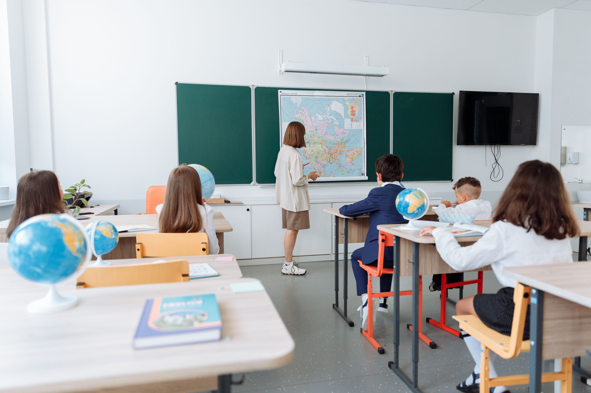

.jpg)
International schools are public and private schools that promote education in an international environment or framework. Although there is no uniform definition or criteria, international schools are usually characterised by a multinational student body and staff, multilingual instruction, curricula oriented towards global perspectives and subjects, and the promotion of concepts such as world citizenship, pluralism, and intercultural understanding;[1] most are private schools. Many international schools adopt a curriculum from programmes and organisations such as the International Baccalaureate, Cambridge International Education, European Baccalaureate, Edexcel, FOBISIA, International Primary Curriculum, or Advanced Placement. International schools often follow a curriculum different from the host country, catering mainly to foreign students, such as members of expatriate communities, international businesses or organisations, diplomatic missions, or missionary programmes. Admission is sometimes open to local students to provide qualifications for employment or higher education in a foreign country, offer high-level language instruction, and/or foster cultural and global awareness

Families consider international schools for a variety of educational and personal reasons. While every child and family situation is unique, several factors often influence parents when comparing different schooling options. Below are some of the most common reasons families choose international education.
One of the main reasons families choose international schools is the curriculum. Many follow globally
recognised programmes such as the British curriculum or the International Baccalaureate.
These provide
structured academic progression across school stages, and internationally recognised qualifications
support a smoother transition between education systems if a family relocates.
In many international schools, English is the primary language of instruction. Students study mathematics,
science, and humanities in English while developing
communication skills through discussion,
presentations,
and collaborative projects. This builds confidence in academic communication for future study abroad.
International schools bring together students from many countries and backgrounds. This diversity creates a
classroom where children meet different
perspectives and experiences, helping them develop cultural
awareness, open-mindedness, and respect for other viewpoints.
International curricula frequently weave global topics across subjects, from international history to
cross-cultural themes. Exposure to
these perspectives helps students understand the interconnected
modern
world and encourages curiosity about other cultures and societies.
For families planning higher education abroad,
international schools often provide pathways aligned with
university admissions in different countries.
Students also build skills valued in higher education,
such as
independent research, analytical thinking, and academic writing.
International schools often support both academic achievement and personal development. Alongside classroom
learning, many encourage holistic development
through sport, music, performing arts, and student clubs.
This
broader approach lets students explore interests, develop creativity, and build confidence beyond academic
subjects.
Many international programmes emphasise inquiry, discussion, and independent thinking. Students are
encouraged to ask questions, analyse information, and form their own ideas,
helping them build critical
thinking skills and problem-solving ability that last well beyond school.
Extracurricular activities play an important role in international schools.
Students may join sports
teams,
debate clubs, arts programmes, and community initiatives that develop teamwork, leadership, and a sense of
belonging within the school community.
International schools often focus on creating supportive learning
environments where students feel
comfortable participating in class discussions and activities.
Teachers may encourage collaboration, group work, and
interactive learning, which can help students
build
confidence in expressing their ideas and engaging with different subjects.
In an increasingly interconnected world, many families consider how education can help children navigate
international environments.
International schools often aim to prepare students for global opportunities
by fostering communication
skills, cultural understanding, and adaptability. These qualities can support students whether they pursue
education, careers, or experiences across different countries.
